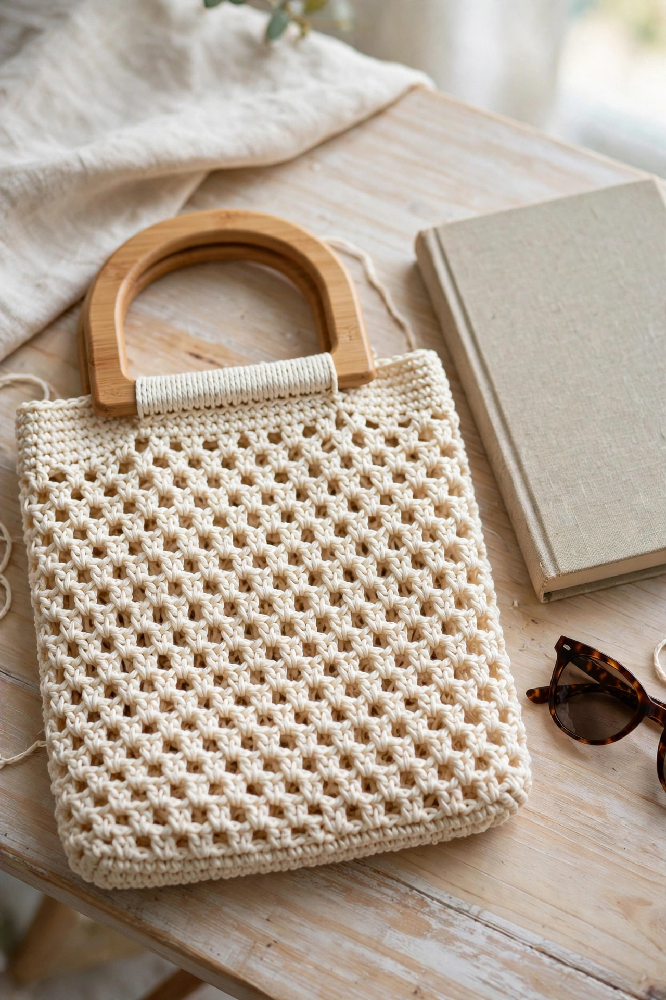

Crochet Beginner Crafts
Easy Crochet Tote Bag for Beginners (Free Pattern)

This tote uses only 2 stitches, single crochet and double crochet. It is sturdy, washable, and big enough for a book, water bottle and phone. Perfect first large project.
What you need
- Cotton yarn, worsted weight, 2 skeins, about 400 yards
- Crochet hook, 5.5 mm
- Stitch markers, 2
- Yarn needle, scissors
Stitches used
Single crochet (sc): insert hook, yarn over, pull through, yarn over, pull through both loops.
Double crochet (dc): yarn over, insert hook, yarn over, pull through, yarn over, pull through 2, yarn over, pull through 2.
Pattern
- Base: Chain 36. Sc in 2nd chain from hook and across. Turn, chain 1. Work 8 rows of sc for a flat base.
- Sides: Do not turn. Work sc evenly around the edge, 1 sc in each row end, 3 sc in corners. Place markers at sides.
- Body: Work in rounds of dc for 18 rounds. This gives height and a little stretch.
- Top edge: Work 2 rounds of sc for a clean edge.
- Handles: Mark 2 handle spots 6 inches apart on each side. Chain 28, skip 12 stitches, join. Sc over the chain on the next round. Repeat on the other side.
- Finish: Weave in ends, wash gently, lay flat to dry.
Size and tips
Finished size about 13 inches wide, 12 inches tall, not counting handles. Use cotton, not acrylic, so the bag holds its shape. If your base curls, go up a hook size.
Free pattern note: Print this page or save it to Pinterest for later. The same pattern works in any solid color, or 2 colors striped every 4 rounds.